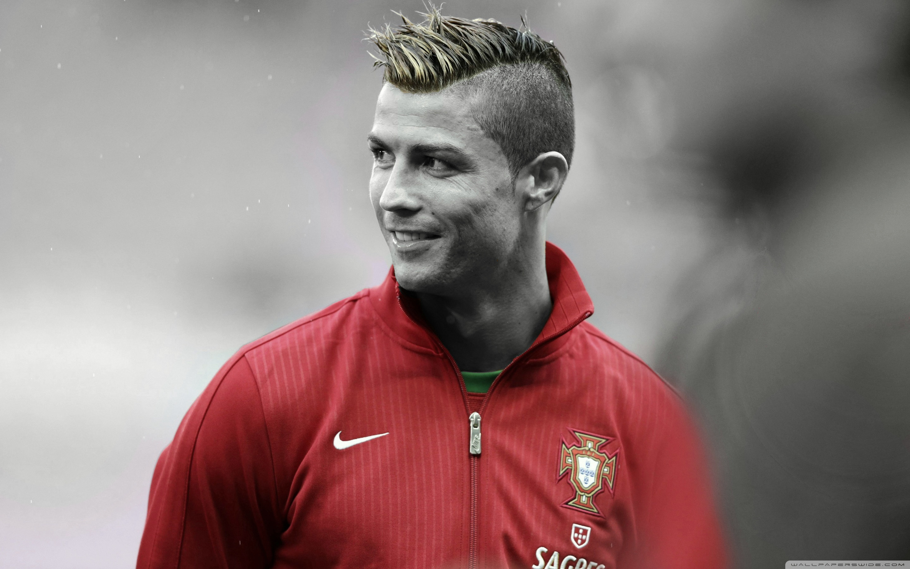

Cristiano Ronaldo
The Flying Beast.

Cristiano in his national jersey
A Short Biography of Cristiano Ronaldo.
- Cristiano Ronaldo dos Santos Aveiro born 5 February 1985 is a Portuguese professional footballer who plays as a forward for Saudi Professional League club Al Nassr and captains the Portugal national team.
- Widely regarded as one of the greatest players of all time, Ronaldo has won five Ballon d'Or awards and four European Golden Shoes, the most by a European player. He has won 32 trophies in his career, including seven league titles, five UEFA Champions Leagues, the UEFA European Championship and the UEFA Nations League.
- Ronaldo holds the records for most appearances (183), goals (140), and assists (42) in the Champions League, goals in the European Championship (14), international goals (118), and joint-most international appearances (196)
- Ronaldo began his senior career with Sporting CP, before signing with Manchester United in 2003.
- Ronaldo was the subject of the then-most expensive association football transfer when he signed for Real Madrid in 2009 in a transfer worth €94 million
- With Real, Ronaldo won two La Liga titles, two Copa del Rey, four Champions Leagues, three UEFA Super Cup and three Club World Cups.
- In 2018, he signed for Juventus in a transfer worth an initial €100 million (£88 million), the most expensive transfer for an Italian club and for a player over 30 years old. He won two Serie A titles, two Supercoppa Italiana trophies and a Coppa Italia, became the inaugural Serie A Most Valuable Player and the first footballer to finish as top scorer in the English, Spanish and Italian leagues, before returning to Manchester United in 2021.
- He left in 2022, after his contract with the club was terminated. In 2023, Ronaldo signed for Al Nassr.
- In 2013, Ronaldo opened his own museum in his hometown of Madeira. The museum contains all of his awards and trophies (over 150), with ,extra room available for future trophies, which he expects to win.
- A vigorous workout regime and strict diet has kept Ronaldo in peak physical condition, leaving him with less body fat than most supermodels. A body fat ratio of 10% enables Ronaldo to run, jump and perform at a higher level than most on the pitch, and it will also ensure that he will be able to play at a high level for many years to come.
- When you are Ronaldo, goals are the order of the day. But when you exceed all expectations, the world has recognized you. In 2008, he scored a whopping 42 goals and was awarded the FIFA World of the Year Honor.
- Despite his great accomplishments, there are many people that don't like Cristiano Ronaldo. They say he is arrogant, aloof, and standoffish. In 2011, most CR7 critics were proved right as he made a comment that left fans, haters, and critics baffled. He claimed those who didn't like him felt that way because he was too handsome, rich and talented than any other figure.
- The Puskas award was created in 2009 to reward the best goal of the year. Cristiano Ronaldo was the first to win the coveted award in 2009.
- Cristiano Ronaldo has a whole galaxy named after himself!Discovered in 2015, A group of scientists led by Dr. David Sobral from the University of Lisbon named it the Cosmos Redshift 7. Notably, the CR7 galaxy is said to have been in existence for over 13 billion years now.
- Ronaldo’s aerial ability is a key facet to his game, as his ability to soar above the tallest defenders and his upper body strength means that any cross into the box will cause problems for defenders.
“In my mind, not just this year, always, I am always the best. And I am always going to say that.” – Cristiano Ronaldo
If you have time you should read more about this amazing human being
Cristiano Ronaldo Wikipedia